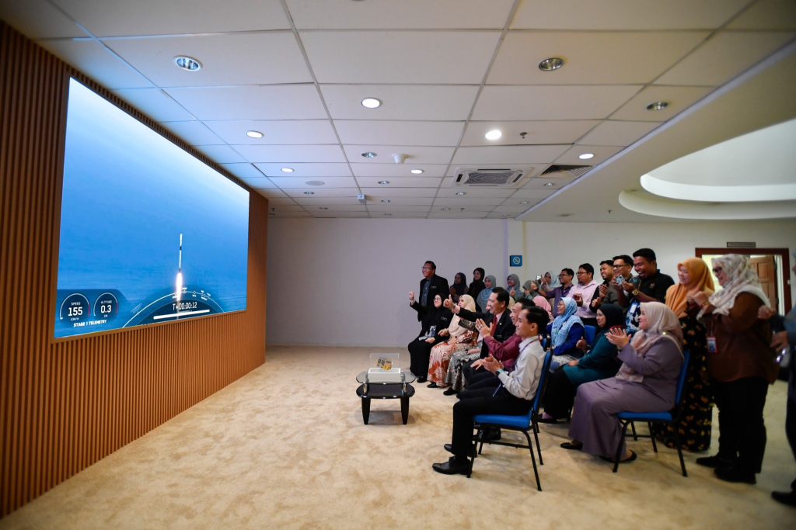

- Press Release, UzmaSAT-1
UzmaSAT-1 berjaya dilancarkan
- January 19, 2025
- By Media GeoAI
PETALING JAYA: Satelit penderiaan jauh UzmaSAT-1, keluaran syarikat tempatan Uzma Berhad berjaya dilancarkan ke orbit rendah bumi awal pagi tadi menggunakan roket Falcon 9 Transporter 12 milik SpaceX.
Pelancaran bersejarah itu berlangsung pada jam 3 pagi waktu Malaysia di Pangkalan Angkasa Vandenberg, California, Amerika Syarikat menjadikan UzmaSAT-1 sebagai roket ke-13 di bawah pengawasan Malaysia.
Kementerian Sains, Teknologi dan Inovasi (MOSTI) berkata, komitmen sebagai peneraju Dasar Angkasa Negara 2030 (DAN2030) akan terus dilakukan untuk menyokong pemain industri tempatan dalam memperkukuh sektor angkasa yang mampan dan berdaya saing.
Katanya, kejayaan pelancaran satelit keluaran UZMA Berhad ini adalah satu lagi petunjuk kepada kejayaan pelaksanaan DAN2030 yang dilancarkan pada tahun 2023.
“UzmaSAT-1 merupakan satelit beresolusi tinggi seberat 45.4 kilogram yang direka untuk menyediakan data permukaan bumi yang berharga bagi meningkatkan pemantauan, terutama dalam bidang pengurusan sekuriti makanan, keselamatan dan pertahanan negara,” katanya dalam satu kenyataan.
MOSTI berkata, penggunaan infrastruktur negara sedia ada serta kerjasama strategik dalam pengoperasian UzmaSAT-1 akan mengoptimumkan pengurusan data satelit dan mempelbagaikan penggunaannya.
Kejayaan ini merupakan manifestasi kejayaan pelaksanaan DAN2030 yang dilancarkan pada 2023 bagi membuktikan keupayaan pemain industri tempatan dalam menyumbang kepada ekonomi angkasa baharu negara.
Pelaksanaan Pelan Tindakan DAN2030 atau Malaysia Space Exploration 2030 (MSE2030) turut berperanan memperkukuhkan kepakaran tempatan dalam teknologi angkasa dan mendorong Malaysia beralih daripada pengguna kepada pencipta teknologi angkasa.
MOSTI berkata, pelancaran ini bukan sahaja meningkatkan daya saing inovasi tempatan tetapi juga menjimatkan kos perbelanjaan kerajaan.
“Ia sekaligus menjadi pemangkin kepada usaha membangunkan ekosistem angkasa negara yang lebih maju demi manfaat rakyat dan kemajuan negara.
“Acara pelancaran UzmaSAT-1 turut disiarkan secara langsung dari Pangkalan Angkasa Vandenberg ke Ibu Pejabat Kumpulan Uzma di Kuala Lumpur dan Ibu Pejabat Agensi Angkasa Malaysia (MYSA),” katanya. -UTUSAN

Sumber: Utusan Online | 16 Januari 2025, 6:30am
oleh Wartawan Hendra Winarno
Related Posts
Looking for Answers to Your Industry Issues?
If you want us to share more about space technology, EUDR, EO satellite applications, and industry related, feel free to drop your contact and experience the technology yourself.